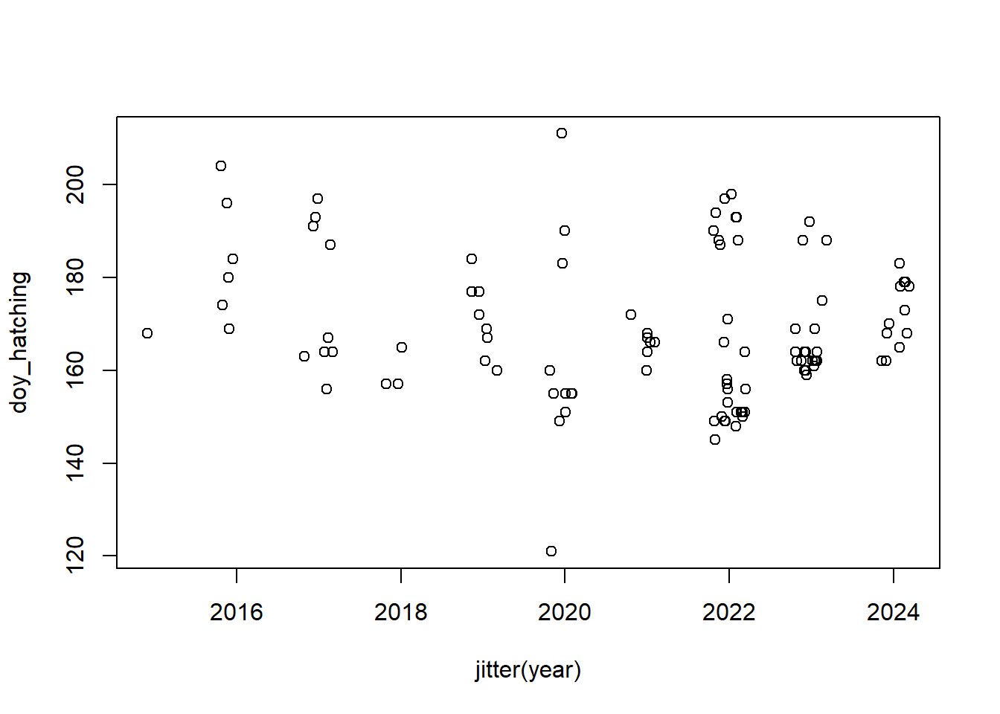
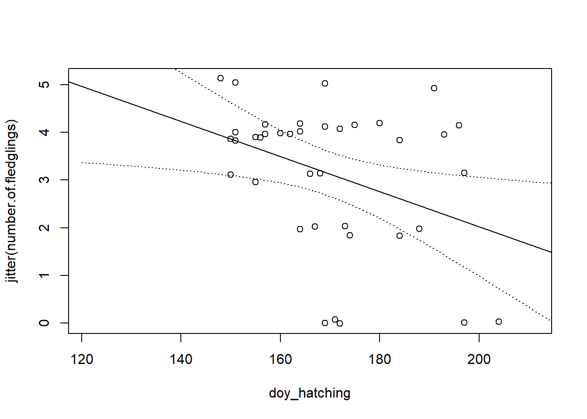

Chapter 16 Exercise: Timing
16.1 Arrival dates in spring
Arrival of migratory birds in central Europe in spring varies among years. In this exercise, explore dates of first observations of the species in central Europe.
For the exercise, we can use data provided by the authors of Strebel et al. (2014). These data include first observation dates of selected bird species in Switzerland over around 15 years (~1995 - 2012). The data estimates detectability peaks and discusses how observer bias influences first arrival dates in citizen science data.
Choose a species and describe how the timing of the first observation has changed over the years. Use regression analyses.
# data download https://datadryad.org/dataset/doi:10.5061/dryad.k20q2 (source: https://besjournals.onlinelibrary.wiley.com/doi/full/10.1111/2041-210X.12175)
# load packages
library(dplyr)
# read in data
dat <- read.csv2("obs_data.csv", header=TRUE)
specdat <- read.csv2("attr.csv", header=TRUE)
str(dat)
str(specdat)
# extract first observation per species and year:
first_obs <- dat %>%
group_by(Year, ArtId) %>%
summarise(first_day = min(DayOfYear), .groups = "drop")
# select data of a species with data from at least 15 years
tt <- table(first_obs$ArtId)
ttspecs <- names(tt)[tt>15]
specdat$name[is.element(specdat$ArtId, ttspecs)]
first_obs$name <- specdat$name[match(first_obs$ArtId, specdat$ArtId)]
first_obs <- first_obs[!is.na(first_obs$name),] # select only species with enough data
# loop through all species
species <- unique(first_obs$name)
for(spec in species){
par(ask=TRUE)
dspec <- subset(first_obs, name==spec)
plot(dspec$Year, dspec$first_day, xlab="Year", ylab="first day", main=spec)
}
par(ask=FALSE)
# select a long-distance migrant for the analysis because
# short the observations of short distance migrants may be biased by
# observation effort in winter that may have changed over the years
# select a species
dspec <- subset(first_obs, name=="Garden Warbler")
# fit a regression line
mod <- lm(first_day~Year, dspec)
# assess model fit
plot(mod)
mod
# draw the regression line with a 95% compatibility interval
newdat <- data.frame(Year=1995:2012)
newdat$fit <- predict(mod, newdata=newdat)
newdat$lwr <- predict(mod, newdata=newdat, interval="confidence")[,2]
newdat$upr <- predict(mod, newdata=newdat, interval="confidence")[,3]
plot(dspec$Year, dspec$first_day, xlab="Year", ylab="first day")
lines(newdat$Year, newdat$fit, lwd=2, col="blue")
lines(newdat$Year, newdat$lwr, lwd=1, lty=3, col="blue")
lines(newdat$Year, newdat$upr, lwd=1, lty=3, col="blue")Questions:
How much did the first observation date advance in 10 years? What is the statistical uncertainty of this value?
What could be reasons for the advance (methodological and ecological reasons)?
The paper introduces a methodology to account for the observer bias. How much different are your results compared to the results in the paper?
If you prefer fitting a non-linear trend, use the R-code provided in the next R-junk. What conclusion changes from the ones above (linear regression)? What additional information do you gain?
# variant: visualise the non-linear trend
library(mgcv)
mod <- gam(first_day~s(Year), data=dspec)
# gam searches the best fitting smoother using leave-one-out cross validation
# assess model fit
plot(mod)
mod
# draw the regression line with a 95% compatibility interval
newdat <- data.frame(Year=1995:2012)
newdat$fit <- predict(mod, newdata=newdat)
newdat$se <- predict(mod, newdata=newdat, se.fit=TRUE)$se.fit
newdat$lwr <- newdat$fit-2*newdat$se
newdat$upr <- newdat$fit+2*newdat$se
plot(dspec$Year, dspec$first_day, xlab="Year", ylab="first day")
lines(newdat$Year, newdat$fit, lwd=2, col="blue")
lines(newdat$Year, newdat$lwr, lwd=1, lty=3, col="blue")
lines(newdat$Year, newdat$upr, lwd=1, lty=3, col="blue")16.2 Additional data and literature on first arrival dates
For the study on bird observations, ebird provides all their data for free after you created an account. With functions from the R-package auk, you can access the ebird data base and download the data directly from within R.
Koh and Opitz (2025) analyse first arrival dates based on citizen science data using state of the art statistical methods.
16.3 Timing of hatching dates
The broodsdata table contains hatching dates of Snowfinches Montifringilla nivalsi and also the number of fledglings. Explore the among year variance in hatching dates and how hatching date correlates with the number of fledglings. Use the R-code junk below as a start.
A short portrait of the Snowfinch: It is a specialist of high elevations, partial migrant, particularly males stay in winter in the Alps. Opportunistic movements towards southern France and Spain during winter are reported. It breeds above the treeline in rock crevices or at buildings. The chicks are fed by insect larvae that are developing in the soft and humid soil along the melting snow patches in spring.
dat <- read.table("data/broodsSF.txt", header=TRUE, sep=";")
dat <- subset(dat, species=="Montifringilla nivalis") # select the species
dat <- dat[!is.na(dat$day.hatching.first.egg),] # select hatching dates
dat <- subset(dat, accuracy_hatching<2) # select accurate hatching dates (we do not know the exact hatching dates of all the broods)
library(birdring)## Lade nötiges Paket: basemaps## Warning: Paket 'basemaps' wurde unter R Version 4.2.3 erstellt## Lade nötiges Paket: maps## Lade nötiges Paket: sfheaders## Warning: Multiple Methodentabellen gefunden für 'elide'# insert day of year
dat$doy_hatching <- dayofyear(d=dat$day.hatching.first.egg, m=dat$month.hatching.first.egg, y=dat$year)
plot(doy_hatching~jitter(year), data=dat)
plot(jitter(number.of.fledglings)~doy_hatching, dat)
mod <- lm(number.of.fledglings~doy_hatching, data=dat)
abline(mod)
newdat <- data.frame(doy_hatching=120:220)
newdat$lwr <- predict(mod, newdata=newdat, interval="confidence")[,2]
newdat$upr <- predict(mod, newdata=newdat, interval="confidence")[,3]
lines(newdat$doy_hatching, newdat$lwr, lty=3)
lines(newdat$doy_hatching, newdat$upr, lty=3)
Questions:
- What could be reasons for the among-year variance in the hatching dates?
- What could be the reason for the decreasing number of fledglings with increasing dates?
- The relationship of breeding success with date is widespread among birds and it is called “the date effect”. Discuss implications of the date effect for migratory birds.
The two studies showed that over the past 20 years, the Snowfinch did not advance the timing of the breeding enough to compensate the warming: Schano et al. (2021), Niffenegger et al. (2025).